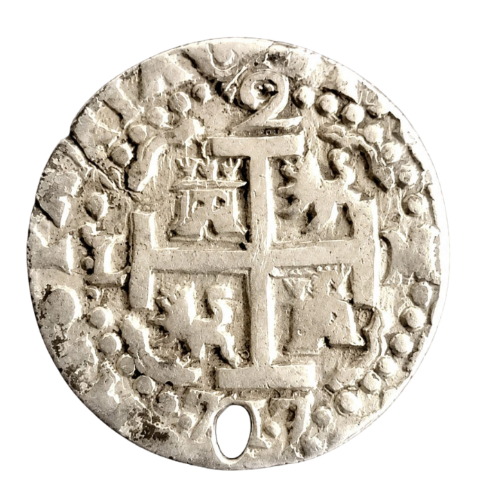
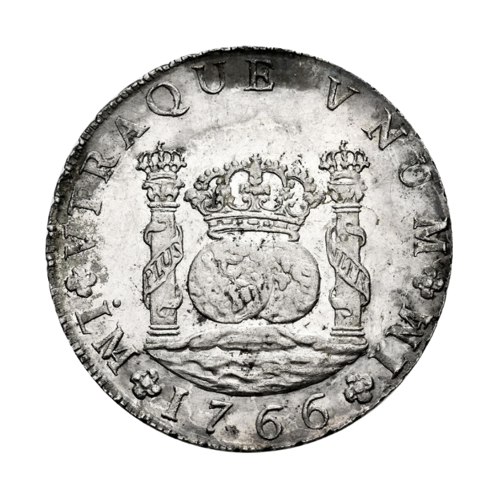

<!-- conversor_quinta.html -->
<div class="macuquina-floating-bar quinta-floating-bar">
  <!-- Botón 1: Pragmática Medina del Campo (conversor4.html) -->
  <button
    type="button"
    class="macuquina-icon-btn"
    title="CÁLCULO DE PASTA A REALES Y PESOS PRAGMÁTICA MEDINA DEL CAMPO"
  >
    
  </button>

  <!-- Botón 2: Reforma Borbónica (conversor3.html) -->
  <button
    type="button"
    class="macuquina-icon-btn"
    title="CONVERSOR DE BARRAS A MONEDAS PRAGMATICA MEDINA-BORBONICA"
  >
    
  </button>
</div>
